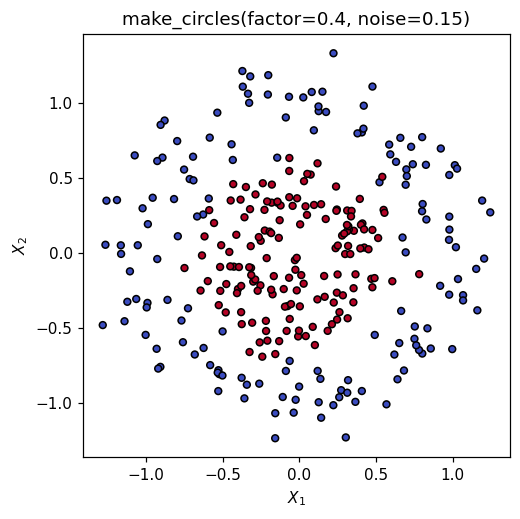
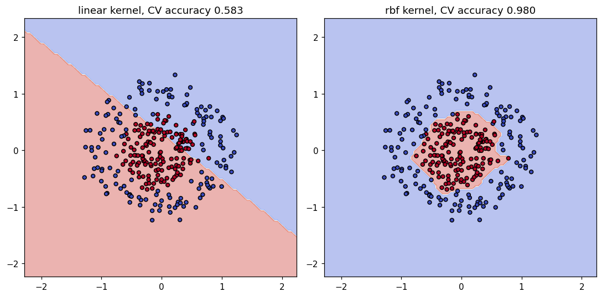
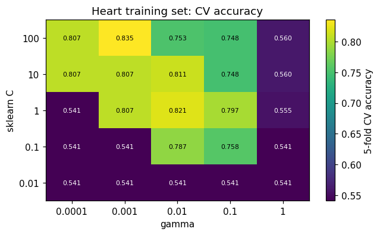
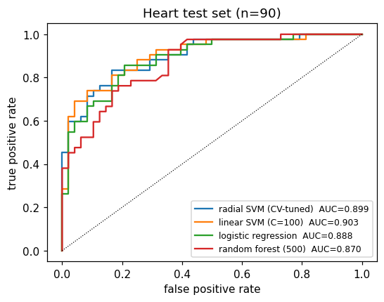

This notebook runs on Colab as-is. The badge link above and the GITHUB_RAW line in the setup cell already point to this repository, so everything installs and loads automatically.
Chapter 9 — Support Vector Machines¶
Lab: margins, soft margins, kernels, and tuning \(C\) and \(\gamma\)¶
Course: Quantitative Research Methods
Instructor: Prof. Dr. Christoph Weisser
Source: James, Witten, Hastie, Tibshirani & Taylor (2023), An Introduction to Statistical Learning, with Applications in Python, Springer. Companion code at statlearning.com.
Companion notebook to Advanced module A5 (ISLP Chapter 9). Work through the numbered sections in order; the closing section Lecture exercises — worked Python solutions answers every exercise from the deck. Every number the deck quotes is reproduced here with the same seeds and the same methods, so you can check the slides against the code.
One warning before you start.
SVC(C=...)is scikit-learn’s cost per violation: largeCmeans a narrow margin and less regularisation. ISLP’s \(C\) is the opposite — a budget for violations, where large means a wide margin. Everything below uses the scikit-learn convention.
Goal. Fit hard- and soft-margin SVMs on seeded 2-D data; see what sklearn’s \(C\) and the radial \(\gamma\) do to the boundary; take a radial SVM to the Heart data, scale it properly, tune \((C,\gamma)\) by cross-validation, and race it against logistic regression and a random forest on ROC AUC.
Setup¶
Run this cell once. The ISLP package can be installed with pip install ISLP. As an alternative, the same data sets are available as CSVs in the workspace’s ALL CSV FILES - 2nd Edition folder.
Google Colab: this notebook also runs on Colab out of the box — the setup cell below installs any missing packages and downloads the data automatically.
# --- Setup: runs locally AND on Google Colab --------------------------------
# Silence only the spurious 'encountered in matmul' RuntimeWarnings that the macOS
# Accelerate BLAS emits; real warnings (deprecations, model caveats) stay visible.
import warnings
warnings.filterwarnings('ignore', message='.*encountered in matmul', category=RuntimeWarning)
import importlib.util, os, subprocess, sys
IN_COLAB = 'google.colab' in sys.modules
def _ensure(pkg, import_name=None):
"""pip-install pkg (quietly) if its import is missing."""
if importlib.util.find_spec(import_name or pkg) is None:
subprocess.run([sys.executable, '-m', 'pip', 'install', '-q', pkg], check=False)
if IN_COLAB: # Colab ships numpy/pandas/sklearn/statsmodels; add course extras
for _pkg, _imp in [('ISLP', 'ISLP')]:
_ensure(_pkg, _imp)
import numpy as np
import pandas as pd
import matplotlib.pyplot as plt
rng = np.random.default_rng(2024)
plt.rcParams['figure.dpi'] = 110
try:
from ISLP import load_data
HAVE_ISLP = True
except ImportError:
HAVE_ISLP = False
print('ISLP not installed; using CSV / URL fallbacks.')
# Local CSV location (repo layout first, then legacy paths, then a data/ cache).
_CANDIDATES = ['../ALL CSV FILES - 2nd Edition',
'ALL CSV FILES - 2nd Edition',
'../../ALL CSV FILES - 2nd Edition', 'data']
CSV = next((p for p in _CANDIDATES if os.path.isdir(p)), 'data')
# GITHUB_RAW lets a fresh Colab runtime fetch any
# CSV that is neither in ISLP nor already local (spaces in the folder -> %20).
GITHUB_RAW = ('https://raw.githubusercontent.com/ChrisW09/Quantitative-Research-Methods/main/'
'ALL%20CSV%20FILES%20-%202nd%20Edition')
# The four datasets NOT in the ISLP package -> load from the book's official
# site so the notebook works on a fresh Colab even before the repo is published.
KNOWN_URLS = {
'Advertising': 'https://www.statlearning.com/s/Advertising.csv',
'Heart': 'https://www.statlearning.com/s/Heart.csv',
'Income1': 'https://www.statlearning.com/s/Income1.csv',
'Income2': 'https://www.statlearning.com/s/Income2.csv',
}
def load(name, **read_csv_kwargs):
"""Load a course dataset. Order: ISLP package -> R datasets -> local CSV
-> official book URL -> your GitHub repo. Works locally and on Colab."""
if HAVE_ISLP:
try:
return load_data(name)
except Exception:
pass
if name == 'USArrests': # classic R dataset, not in ISLP
try:
import statsmodels.api as sm
return sm.datasets.get_rdataset('USArrests', 'datasets').data
except Exception:
pass
path = f'{CSV}/{name}.csv'
if os.path.exists(path): # running from the repo (local)
return pd.read_csv(path, **read_csv_kwargs)
remotes = ([KNOWN_URLS[name]] if name in KNOWN_URLS else []) + [f'{GITHUB_RAW}/{name}.csv']
for url in remotes: # fresh Colab: stream over https
try:
return pd.read_csv(url, **read_csv_kwargs)
except Exception:
continue
raise FileNotFoundError(
f"Could not load {name!r}. Put the CSV in '{CSV}/' or check your connection for the GITHUB_RAW fallback.")
ISLP not installed; using CSV / URL fallbacks.
1. Synthetic two-class data¶
Two concentric rings: the inner class sits inside the outer one, so no straight line can separate them. This is the data set the deck uses for every kernel comparison.
from sklearn.datasets import make_circles
X, y = make_circles(n_samples=300, factor=0.4, noise=0.15, random_state=0)
print('X', X.shape, ' class counts', np.bincount(y)) # 150 / 150, perfectly balanced
fig, ax = plt.subplots(figsize=(5, 5))
ax.scatter(X[:, 0], X[:, 1], c=y, cmap='coolwarm', edgecolor='k', s=20)
ax.set(xlabel='$X_1$', ylabel='$X_2$', title='make_circles(factor=0.4, noise=0.15)')
plt.show()
X (300, 2) class counts [150 150]

2. Linear SVM¶
Three things in turn: the hard margin on separable data (the deck’s seed 2024 picture), what sklearn’s C does to a soft margin, and how badly a linear kernel fails on the rings.
from sklearn.svm import SVC
# The deck's separable simulation: 20 points, seed 2024, one class shifted by 2.5.
rng_geo = np.random.default_rng(2024)
Xs = rng_geo.normal(size=(20, 2))
ys = np.repeat([-1, 1], 10)
Xs[ys == 1] += 2.5
hard = SVC(kernel='linear', C=1e6).fit(Xs, ys) # huge C ~ hard margin
w = hard.coef_[0]
print('training accuracy :', hard.score(Xs, ys)) # 1.0 -- separable
print('support vectors :', hard.n_support_.sum(), hard.support_)
print('||beta|| :', round(float(np.linalg.norm(w)), 3)) # deck: 2.711
print('margin M = 1/||b||:', round(float(1 / np.linalg.norm(w)), 3)) # deck: 0.369
print('street width 2M :', round(float(2 / np.linalg.norm(w)), 3)) # deck: 0.738
training accuracy : 1.0
support vectors : 3 [ 0 4 18]
||beta|| : 2.711
margin M = 1/||b||: 0.369
street width 2M : 0.738
Reading the output. The deck quotes \(\|\beta\|=2.711\), \(M=0.369\) and a street of width \(0.738\) held open by exactly three support vectors — reproduced above. Deleting any of the other 17 observations would leave the fit bit-for-bit identical: they carry \(\alpha_i = 0\).
# Overlapping data (deck seed 2025): now no hyperplane separates the classes,
# and sklearn's C decides how wide the street is.
rng_ov = np.random.default_rng(2025)
Xo = rng_ov.normal(size=(60, 2))
yo = np.repeat([-1, 1], 30)
Xo[yo == 1] += 1.6
print('hard margin feasible? train acc =',
round(SVC(kernel='linear', C=1e6).fit(Xo, yo).score(Xo, yo), 3)) # 0.867 -> no
print(f"{'sklearn C':>10} {'nSV':>5} {'width 2M':>9} {'sum slack':>10} {'train acc':>10}")
for C in [0.01, 0.1, 1.0, 10.0]:
m = SVC(kernel='linear', C=C).fit(Xo, yo)
slack = np.maximum(0.0, 1 - yo * m.decision_function(Xo)).sum() # xi_i = max(0,1-y f)
print(f'{C:>10g} {m.n_support_.sum():>5d} '
f'{2 / np.linalg.norm(m.coef_):>9.2f} {slack:>10.1f} {m.score(Xo, yo):>10.3f}')
hard margin feasible? train acc = 0.867
sklearn C nSV width 2M sum slack train acc
0.01 50 4.75 30.6 0.850
0.1 31 2.15 20.8 0.867
1 22 1.60 19.5 0.867
10 21 1.21 19.3 0.850
Reading the output. Exactly the deck’s table: as sklearn’s C rises from \(0.01\) to \(10\) the street narrows from \(4.75\) to \(1.21\), the support vectors fall from \(50\) to \(21\), and \(\sum_i\xi_i\) falls from \(30.6\) to \(19.3\). Big C, narrow street, fewer support vectors, more variance — the opposite of what “increase \(C\) to regularise” would suggest. Note also that training accuracy is not monotone in \(C\) (\(0.850, 0.867, 0.867, 0.850\)), which is why \(C\) has to be chosen by cross-validation.
from sklearn.model_selection import GridSearchCV
from sklearn.pipeline import make_pipeline
from sklearn.preprocessing import StandardScaler
# Back to the rings. Even at its best CV-chosen C, a linear kernel is near-useless.
lin = make_pipeline(StandardScaler(), SVC(kernel='linear'))
lin_g = GridSearchCV(lin, {'svc__C': np.logspace(-2, 2, 9)}, cv=5).fit(X, y)
print('best C:', lin_g.best_params_, ' CV acc:', round(lin_g.best_score_, 3)) # 0.583
best C: {'svc__C': np.float64(0.01)} CV acc: 0.583
3. Radial-kernel SVM¶
\(K(x,x') = \exp(-\gamma\|x-x'\|^2)\). Small \(\gamma\) = smooth and global (high bias); large \(\gamma\) = an island around every support vector (high variance).
from sklearn.model_selection import cross_val_score
print(f"{'gamma':>8} {'CV acc':>8} {'train acc':>10} {'nSV':>5}")
for g in [0.01, 0.1, 1.0, 100.0]:
p = make_pipeline(StandardScaler(), SVC(kernel='rbf', C=1, gamma=g))
cv = cross_val_score(p, X, y, cv=5).mean()
p.fit(X, y)
print(f'{g:>8g} {cv:>8.3f} {p.score(X, y):>10.3f} {p[-1].n_support_.sum():>5d}')
gamma CV acc train acc nSV
0.01 0.673 0.693 300
0.1 0.960 0.960 120
1 0.970 0.970 60
100 0.900 1.000 285
Reading the output. The deck’s \(\gamma\) figure, in numbers. At \(\gamma=0.01\) the kernel is so flat that the model cannot even see the ring (CV \(0.673\)). At \(\gamma=100\) it classifies the training set perfectly (\(1.000\)) — and CV accuracy drops to \(0.900\), because it has grown a private island around each point. The useful range is in between.
rbf = make_pipeline(StandardScaler(), SVC(kernel='rbf'))
rbf_g = GridSearchCV(rbf,
{'svc__C': np.logspace(-2, 2, 5),
'svc__gamma': np.logspace(-3, 1, 5)}, cv=5).fit(X, y)
print('best params:', rbf_g.best_params_,
' CV acc:', round(rbf_g.best_score_, 3)) # C=1, gamma=10 -> 0.98
best params: {'svc__C': np.float64(1.0), 'svc__gamma': np.float64(10.0)} CV acc: 0.98
Decision boundary¶
Side by side: the CV-tuned linear kernel against the CV-tuned radial kernel.
from sklearn.inspection import DecisionBoundaryDisplay
fig, axes = plt.subplots(1, 2, figsize=(10, 5))
for ax, name, mdl, cv in [(axes[0], 'linear', lin_g.best_estimator_, lin_g.best_score_),
(axes[1], 'rbf', rbf_g.best_estimator_, rbf_g.best_score_)]:
DecisionBoundaryDisplay.from_estimator(mdl, X, ax=ax,
response_method='predict', alpha=0.4, cmap='coolwarm')
ax.scatter(X[:, 0], X[:, 1], c=y, cmap='coolwarm', edgecolor='k', s=20)
ax.set_title(f'{name} kernel, CV accuracy {cv:.3f}')
plt.tight_layout(); plt.show()

4. Real data: Heart¶
Heart.csv carries an unnamed row-number column (index_col=0 keeps it out of the design matrix), six rows with missing Ca/Thal, and two categorical predictors (ChestPain, Thal) that must be encoded. The response is AHD (Yes/No).
# Heart is not in the ISLP package, so load() falls back to the CSV, whose
# first (unnamed) column is just the row number -> index_col=0 drops it.
Heart = load('Heart', index_col=0).dropna().reset_index(drop=True)
yH = (Heart['AHD'] == 'Yes').astype(int).values
XH = pd.get_dummies(Heart.drop(columns='AHD'), drop_first=True).astype(float)
from sklearn.model_selection import train_test_split
Xtr, Xte, ytr, yte = train_test_split(XH.values, yH, test_size=0.3, random_state=0)
print('after dropna:', Heart.shape, ' predictors after encoding:', XH.shape[1])
print('AHD = Yes :', yH.sum(), f'of {len(yH)} ({yH.mean():.3f})')
print('train / test :', len(ytr), '/', len(yte),
' train majority class:', round(1 - ytr.mean(), 3))
after dropna: (297, 14) predictors after encoding: 16
AHD = Yes : 137 of 297 (0.461)
train / test : 207 / 90 train majority class: 0.541
from scipy.spatial.distance import pdist
raw = SVC(kernel='rbf', C=1, gamma=0.05).fit(Xtr, ytr) # NO scaling
sc = make_pipeline(StandardScaler(),
SVC(kernel='rbf', C=1, gamma=0.05)).fit(Xtr, ytr) # scaled
print('unscaled test acc:', round(raw.score(Xte, yte), 3),
' predictions [No, Yes]:', np.bincount(raw.predict(Xte)))
print('scaled test acc:', round(sc.score(Xte, yte), 3))
d2_raw = np.median(pdist(XH.values, 'sqeuclidean'))
d2_sc = np.median(pdist(StandardScaler().fit_transform(XH.values), 'sqeuclidean'))
print(f'median ||x-x\'||^2 : raw {d2_raw:.0f} scaled {d2_sc:.1f}')
print(f'kernel at gamma=.05: raw {np.exp(-0.05 * d2_raw):.3g} '
f'scaled {np.exp(-0.05 * d2_sc):.3f}')
unscaled test acc: 0.556 predictions [No, Yes]: [86 4]
scaled test acc: 0.822
median ||x-x'||^2 : raw 4294 scaled 31.1
kernel at gamma=.05: raw 5.83e-94 scaled 0.211
Reading the output. The deck quotes \(0.556\) unscaled against \(\mathbf{0.822}\) scaled, and that is what we get. The mechanism is in the last two lines: unscaled, Chol (sd \(\approx 52\)) dominates every distance, the median \(\|x-x'\|^2\) is about \(4\,294\), and \(e^{-0.05\times 4294}\approx 5.8\times10^{-94}\) — the kernel matrix is numerically the identity, so \(f(x)\approx\beta_0\) and the model predicts the majority class for \(86\) of \(90\) patients. Standardised, a typical kernel entry is \(0.211\): a real similarity.
5. Tuning \(C\) and \(\gamma\) by cross-validation¶
Scaling goes inside the pipeline so that each CV fold rescales with its own training rows only. The grid is logarithmic, because \(C\) and \(\gamma\) act multiplicatively.
Cs = np.array([0.01, 0.1, 1.0, 10.0, 100.0])
Gs = np.array([1e-4, 1e-3, 1e-2, 1e-1, 1.0])
gs = GridSearchCV(make_pipeline(StandardScaler(), SVC(kernel='rbf')),
{'svc__C': Cs, 'svc__gamma': Gs}, cv=5).fit(Xtr, ytr)
S = gs.cv_results_['mean_test_score'].reshape(len(Cs), len(Gs))
fig, ax = plt.subplots(figsize=(6.5, 3.6))
im = ax.imshow(S, origin='lower', cmap='viridis', aspect='auto')
ax.set_xticks(range(len(Gs)), [f'{g:g}' for g in Gs])
ax.set_yticks(range(len(Cs)), [f'{c:g}' for c in Cs])
for i in range(len(Cs)):
for j in range(len(Gs)):
ax.text(j, i, f'{S[i, j]:.3f}', ha='center', va='center', fontsize=7,
color='white' if S[i, j] < S.max() - 0.12 else 'black')
fig.colorbar(im, ax=ax, label='5-fold CV accuracy')
ax.set(xlabel='gamma', ylabel='sklearn C', title='Heart training set: CV accuracy')
plt.show()
print('best:', gs.best_params_, ' CV', round(gs.best_score_, 3),
' test', round(gs.score(Xte, yte), 3),
' nSV', gs.best_estimator_[-1].n_support_.sum())

best: {'svc__C': np.float64(100.0), 'svc__gamma': np.float64(0.001)} CV 0.835 test 0.789 nSV 80
Reading the output. The deck quotes the best cell as \(C=100\), \(\gamma=10^{-3}\) at CV accuracy \(0.835\). The dark cells all sit at \(0.541\) — exactly the training-set majority-class rate, i.e. models that have collapsed to “always predict No”. Notice the diagonal ridge: a large \(\gamma\) only survives with a small \(C\), which is why the two must be tuned jointly.
from sklearn.ensemble import RandomForestClassifier
from sklearn.linear_model import LogisticRegression
from sklearn.metrics import roc_auc_score, roc_curve
lin_h = GridSearchCV(make_pipeline(StandardScaler(), SVC(kernel='linear')),
{'svc__C': Cs}, cv=5).fit(Xtr, ytr)
logit = make_pipeline(StandardScaler(), LogisticRegression(max_iter=5000)).fit(Xtr, ytr)
forest = RandomForestClassifier(n_estimators=500, random_state=0).fit(Xtr, ytr)
curves = [('radial SVM (CV-tuned)', gs.best_estimator_.decision_function(Xte)),
(f"linear SVM (C={lin_h.best_params_['svc__C']:g})",
lin_h.best_estimator_.decision_function(Xte)), # decision_function, NOT proba
('logistic regression', logit.predict_proba(Xte)[:, 1]),
('random forest (500)', forest.predict_proba(Xte)[:, 1])]
fig, ax = plt.subplots(figsize=(5.5, 4))
for lab, s in curves:
fpr, tpr, _ = roc_curve(yte, s)
ax.plot(fpr, tpr, label=f'{lab} AUC={roc_auc_score(yte, s):.3f}')
ax.plot([0, 1], [0, 1], 'k:', lw=0.8)
ax.legend(loc='lower right', fontsize=8)
ax.set(xlabel='false positive rate', ylabel='true positive rate',
title=f'Heart test set (n={len(yte)})')
plt.show()

Reading the output. Linear SVM \(0.903\), radial SVM \(0.899\), logistic regression \(0.888\), random forest \(0.870\) — the deck’s four numbers, and a spread of only \(0.033\) on \(90\) test patients. The simplest kernel wins here, and the CV-tuned radial kernel picked \(\gamma=10^{-3}\), which is so small that it is nearly linear anyway. Note that both SVMs are scored through decision_function: an ROC curve needs a ranking, not a probability.
Lecture exercises — worked Python solutions¶
These are the exercises from the lecture slides, solved step by step; run them cell by cell. The [Python] ones are answered in code with the deck’s seeds and printed numbers; the [Concept] and [Math] ones get a short written answer. Data loads through the load() helper defined in the Setup cell, so every cell works locally and on Colab.
Exercise 9.1 — Reading a hyperplane [Math]¶
Task (from the slides). For \(1 + 2X_1 + 3X_2 = 0\): classify \((0,0)\), \((-1,1)\), \((2,-2)\); give \(\|\beta\|\) and each point’s distance; then multiply all coefficients by \(10\).
Answer. \(\|\beta\| = \sqrt{2^2+3^2} = \sqrt{13} = 3.6056\).
\(x\) |
\(f(x)=1+2x_1+3x_2\) |
\(\hat y\) |
\(\lvert f\rvert/\lVert\beta\rVert\) |
|---|---|---|---|
\((0,0)\) |
\(+1\) |
\(+1\) |
\(0.277\) |
\((-1,1)\) |
\(+2\) |
\(+1\) |
\(0.555\) |
\((2,-2)\) |
\(-1\) |
\(-1\) |
\(0.277\) |
Multiplying the coefficients by \(10\) multiplies every score by \(10\) and \(\|\beta\|\) by \(10\). Every sign — hence every prediction — is unchanged, and so is every distance \(|f|/\|\beta\|\). The sign and the distance are invariant; the raw score is not. That arbitrary scale is exactly what the canonical constraint \(y_i f(x_i)\ge 1\) pins down.
Exercise 9.2 — The maximal margin by hand [Math]¶
Task (from the slides). Seven points, \(y=-1\) at \((3,4),(2,2),(4,4),(1,4)\) and \(y=+1\) at \((2,1),(4,3),(4,1)\). Find the optimal line, its canonical form, the margin, and the support vectors.
Answer. Along \(X_1-X_2\) the \(-1\) class gives \(\{-1,0,0,-3\}\) and the \(+1\) class gives \(\{1,1,3\}\); the extremes are \(0\) and \(1\), so the widest street puts the boundary at the midpoint, \(X_2 = X_1 - \tfrac12\). Rescaling so the nearest points score \(\pm1\):
so \(M = 1/\|\beta\| = 0.3536\) and the street width is \(2M = 1/\sqrt2 = 0.7071\). The four points on the margin — \((2,2)\), \((4,4)\), \((2,1)\), \((4,3)\) — are the support vectors. Moving observation 7 from \((4,1)\) to \((4.5,0.5)\) takes it further away (\(f\) goes from \(+5\) to \(+7\)), so nothing about the fit changes. The cell below checks all of this.
P = np.array([[3, 4], [2, 2], [4, 4], [1, 4], [2, 1], [4, 3], [4, 1]], float)
lab = np.array([-1, -1, -1, -1, 1, 1, 1])
m = SVC(kernel='linear', C=1e6).fit(P, lab)
print('beta :', np.round(m.coef_[0], 3), ' beta_0:', round(float(m.intercept_[0]), 3))
print('||beta||:', round(float(np.linalg.norm(m.coef_)), 4),
' M:', round(float(1 / np.linalg.norm(m.coef_)), 4))
print('y*f(x) :', np.round(lab * m.decision_function(P), 3)) # ==1 at the four SVs
print('sklearn support_ (0-based):', m.support_)
beta : [ 2. -2.] beta_0: -1.0
||beta||: 2.8281 M: 0.3536
y*f(x) : [3. 1. 1. 6.999 1. 1. 4.999]
sklearn support_ (0-based): [1 2 5]
Reading the output. SVC recovers \(\beta=(2,-2)\), \(\beta_0=-1\), \(M=0.3536\), and y*f(x) equals \(1\) at observations 2, 3, 5 and 6 (1-based). Note that support_ lists only three of the four: with four points tied on the margin the dual solution is not unique, so one multiplier can come out exactly zero. Geometrically all four are support vectors.
Exercise 9.3 — Slacks, budgets and sklearn’s \(C\) [Concept]¶
Answer.
The margin \(M\) is maximised, subject to \(y_i f(x_i) \ge M(1-\xi_i)\) and \(\xi_i \ge 0\). The budget sits on the sum of the slacks, \(\sum_{i=1}^n \xi_i \le C_{\text{ISLP}}\) — not on each \(\xi_i\), and not on a count of violations.
\(\xi_i = 0.4 \in (0,1]\): inside the street, still on the correct side. \(\xi_i = 1.8 > 1\): on the wrong side, misclassified. Both satisfy \(y_i f(x_i)\le 1\), so both are support vectors.
The direction is inverted. sklearn minimises \(\tfrac12\|\beta\|^2 + C\sum_i\xi_i\), i.e. penalty weight \(\lambda = 1/(2C)\). Raising \(C\) from \(0.1\) to \(100\) weakens regularisation: the slacks shrink, \(\|\beta\|\) grows, the margin \(1/\|\beta\|\) narrows, and \(|\mathcal S|\) falls. Section 2 above shows exactly this on 60 simulated points.
\(196\) of \(200\) points have \(y_i f(x_i)\le 1\), so almost the whole sample lies inside a very wide street: a small \(C\), a heavily regularised, high-bias, low-variance fit. Many support vectors is a smoothness signal, not an overfitting signal.
Exercise 9.4 — The polynomial kernel is an inner product [Math]¶
Answer. With \(s = x_1x_1' + x_2x_2'\),
which is \(\langle\phi(x),\phi(x')\rangle\) for
Dropping the \(\sqrt2\) factors gives a different kernel. Cost: three multiplications through \(K\), six (plus building and storing both vectors) through \(\phi\). For \(p=100\), \(d=3\) the enlarged space has \(\binom{103}{3} = 176\,851\) dimensions, against \(p+1 = 101\) multiplications per kernel entry — the same fit at a cost that never depends on the enlarged dimension.
Exercise 9.5 — Kernels on the concentric data [Python]¶
Task (from the slides). On make_circles(n_samples=300, factor=0.4, noise=0.15, random_state=0), tune a linear SVM over C = np.logspace(-2, 2, 9), a radial SVM over C = np.logspace(-2, 2, 5) and gamma = np.logspace(-3, 1, 5), and fit a degree-2 polynomial kernel with coef0=1, C=1. Explain the gap.
pipe = lambda **kw: make_pipeline(StandardScaler(), SVC(**kw)) # scale, then fit
lin5 = GridSearchCV(pipe(kernel='linear'), # (1) linear
{'svc__C': np.logspace(-2, 2, 9)}, cv=5).fit(X, y)
rbf5 = GridSearchCV(pipe(kernel='rbf'), # (2) radial
{'svc__C': np.logspace(-2, 2, 5),
'svc__gamma': np.logspace(-3, 1, 5)}, cv=5).fit(X, y)
pol5 = cross_val_score(pipe(kernel='poly', degree=2, coef0=1, C=1), X, y, cv=5)
print('linear', lin5.best_params_, round(lin5.best_score_, 3)) # 0.583
print('radial', rbf5.best_params_, round(rbf5.best_score_, 3)) # 0.98
print('poly d=2 CV', round(pol5.mean(), 3)) # 0.963
linear {'svc__C': np.float64(0.01)} 0.583
radial {'svc__C': np.float64(1.0), 'svc__gamma': np.float64(10.0)} 0.98
poly d=2 CV 0.963
Reading the output. The deck’s three numbers: linear \(0.583\), radial \(\mathbf{0.980}\), polynomial degree 2 \(0.963\). With a 50/50 split, \(0.583\) is barely above a coin flip — and CV picked the smallest \(C\), because when no line can work the wide margin at least keeps the fit stable. Degree 2 nearly matches the radial kernel, which is no accident: the true boundary is a circle, exactly a degree-2 surface. The failure of the linear kernel is about the boundary’s shape, so no value of \(C\) can repair it; only a change of kernel can.
One trap worth repeating: coef0=1 is essential. scikit-learn’s polynomial kernel is \((\gamma\langle x,x'\rangle + r)^d\) with \(r =\) coef0 \(= 0\) by default, which drops all the lower-order terms and is not ISLP’s \((1+\langle x,x'\rangle)^d\).
Exercise 9.6 — Scaling the Heart predictors [Python]¶
Task (from the slides). Fit SVC(kernel='rbf', C=1, gamma=0.05) on the raw Heart predictors and again inside a StandardScaler pipeline; then compute the median squared distance between patients, raw and standardised, and explain the difference.
# (a) unscaled ---------------------------------------------------------------
raw6 = SVC(kernel='rbf', C=1, gamma=0.05).fit(Xtr, ytr)
print('unscaled test acc:', round(raw6.score(Xte, yte), 3),
' predicted [No, Yes]:', np.bincount(raw6.predict(Xte)),
f' (test set is {yte.mean():.3f} Yes)')
# (b) scaled -----------------------------------------------------------------
sc6 = make_pipeline(StandardScaler(), SVC(kernel='rbf', C=1, gamma=0.05)).fit(Xtr, ytr)
print('scaled test acc:', round(sc6.score(Xte, yte), 3))
# (c) why: the spread of the predictors, and what it does to the kernel -------
print('\nlargest / smallest predictor sd:',
round(XH.std().max(), 2), '(', XH.std().idxmax(), ') vs',
round(XH.std().min(), 2), '(', XH.std().idxmin(), ')')
print('median d^2 : raw %.0f scaled %.1f' % (d2_raw, d2_sc))
print('exp(-0.05 * median d^2): raw %.3g scaled %.3f'
% (np.exp(-0.05 * d2_raw), np.exp(-0.05 * d2_sc)))
unscaled test acc: 0.556 predicted [No, Yes]: [86 4] (test set is 0.467 Yes)
scaled test acc: 0.822
largest / smallest predictor sd: 52.0 ( Chol ) vs 0.27 ( ChestPain_typical )
median d^2 : raw 4294 scaled 31.1
exp(-0.05 * median d^2): raw 5.83e-94 scaled 0.211
Reading the output. \(0.556\) against \(\mathbf{0.822}\) — a 27-point gain from three words of code, exactly as the deck quotes. Unscaled, the model predicts “Yes” for only 4 of 90 patients while the test set is \(46.7\%\) “Yes”: it has collapsed to the majority-class rule. The reason is in part (c): Chol has standard deviation \(52.0\) while the smallest spread in the design matrix is a dummy at \(0.27\) (and the binary Fbs sits at \(0.35\)), so the median squared distance between two patients is about \(4\,294\) raw and \(e^{-0.05\times4294}=5.8\times10^{-94}\) — every off-diagonal kernel entry underflows, the kernel matrix is numerically the identity, and \(f(x)\approx\beta_0\). Standardised, the median distance is \(31.1\) and a typical kernel entry is \(0.211\).
\(\gamma\) is measured in inverse squared units of the predictors. An SVM without a scaler is not a model.
Exercise 9.7 — Counting multi-class classifiers [Concept]¶
Answer.
OVO needs \(\binom{K}{2} = K(K-1)/2\): 6 for \(K=4\) and 45 for \(K=10\). OVA needs \(K\): 4 and 10.
With \(K=10\) balanced classes and \(n=10\,000\), each class has \(1\,000\) observations, so an OVO fit sees \(2\,000\) rows and an OVA fit sees all \(10\,000\).
With training cost \(\propto m^2\): OVO costs \(45 \times 2\,000^2 = 1.8\times10^{8}\) and OVA costs \(10 \times 10\,000^2 = 1.0\times10^{9}\). OVO does about \(5.6\times\) less work despite fitting \(4.5\times\) as many models — which is why
SVCdefaults to it.OVA gives exactly one score \(f_k(x)\) per class, so prediction is a single \(\arg\max\) with no ties and no vote counting, and each fit answers a question we care about (“is it class \(k\)?”). Its weakness mirrors OVO’s: each fit is badly unbalanced (1 against 9), and the \(K\) scores are not on a comparable scale.
Extended Exercise 9.1 — From hard to soft margin by hand [Math]¶
Answer. Adding \((2,3)\) with \(y_8=+1\) puts a \(+1\) point at \(x_1-x_2=-1\), the same coordinate as the \(-1\) point \((3,4)\): the two classes’ convex hulls now intersect, so no hyperplane separates them and the hard-margin programme is infeasible.
Keeping \(f(x)=-1+2x_1-2x_2\) and computing \(\xi_i = \max\{0,\,1-y_i f(x_i)\}\):
\(i\) |
1 |
2 |
3 |
4 |
5 |
6 |
7 |
8 |
|---|---|---|---|---|---|---|---|---|
\(y_i f(x_i)\) |
3 |
1 |
1 |
7 |
1 |
1 |
5 |
\(-3\) |
\(\xi_i\) |
0 |
0 |
0 |
0 |
0 |
0 |
0 |
4 |
so \(\sum_i \xi_i = 4\): one badly placed observation consumes the entire budget, which is the honest reading of “the budget is on the sum of the slacks”. This \(f\) is feasible as soon as \(C_{\text{ISLP}} \ge 4\), and the support vectors are now observations 2, 3, 5, 6 (on the kerb) and 8 (misclassified) — five in all.
In sklearn’s objective the fit costs \(\tfrac12(2\sqrt2)^2 + 4C = 4 + 4C\). With a small \(C\) the slack term is cheap, so the solver buys more slack for a smaller \(\|\beta\|\): it tilts and widens the street and becomes far less sensitive to point 8. With a large \(C\) it contorts to keep \(\xi_8\) small, ending with a large \(\|\beta\|\) and a narrow, unstable margin. (A common slip: \(\xi_8\) lives on the functional margin scale, so it is \(4\), not \(4/\|\beta\| = 1.41\).)
Extended Exercise 9.2 — Tune an SVM on Heart and race it [Python]¶
Task (from the slides). On the Heart split (207 train / 90 test): tune a radial SVM over \(C \in \{10^{-2},\dots,10^{2}\}\) and \(\gamma \in \{10^{-4},\dots,10^{0}\}\) and a linear SVM over the same \(C\) grid; fit a scaled logistic regression and a 500-tree random forest; report the test ROC AUC of all four.
for nm, g in [('radial', gs), ('linear', lin_h)]: # (1) and (2)
print(nm, g.best_params_, 'CV', round(g.best_score_, 3),
'test', round(g.score(Xte, yte), 3),
'nSV', g.best_estimator_[-1].n_support_.sum())
scores = { # (3) and (4): four contenders
'radial SVM': gs.best_estimator_.decision_function(Xte), # NOT predict_proba
'linear SVM': lin_h.best_estimator_.decision_function(Xte),
'logistic': logit.predict_proba(Xte)[:, 1],
'forest': forest.predict_proba(Xte)[:, 1],
}
for nm, s in scores.items():
print('%-11s AUC=%.3f' % (nm, roc_auc_score(yte, s)))
aucs = [roc_auc_score(yte, s) for s in scores.values()]
print('spread of the four AUCs: %.3f' % (max(aucs) - min(aucs)))
radial {'svc__C': np.float64(100.0), 'svc__gamma': np.float64(0.001)} CV 0.835 test 0.789 nSV 80
linear {'svc__C': np.float64(100.0)} CV 0.84 test 0.822 nSV 72
radial SVM AUC=0.899
linear SVM AUC=0.903
logistic AUC=0.888
forest AUC=0.870
spread of the four AUCs: 0.033
Reading the output. The deck’s numbers: radial SVM CV \(0.835\) / test \(0.789\) / 80 support vectors at \(C=100,\ \gamma=10^{-3}\); linear SVM CV \(0.840\) / test \(0.822\) / 72 support vectors at \(C=100\). Test AUCs are \(0.899\), \(0.903\), \(0.888\), \(0.870\) — a spread of \(0.033\) across four quite different methods on 90 patients, comfortably inside sampling noise at this sample size.
Two conclusions. First, cross-validation itself told us the radial kernel is not wanted: it selected \(\gamma = 10^{-3}\), small enough that \(\exp(-\gamma\|x-x'\|^2)\approx 1-\gamma\|x-x'\|^2\) and the kernel is effectively linear. Second, the linear SVM is at least as good on both CV accuracy and test AUC, with fewer support vectors and one hyperparameter instead of two — so prefer it. Do not read a \(0.033\) AUC gap on \(n=90\) as a real ranking; bootstrap a confidence interval first.
# A caveat worth seeing once: probability=True refits a Platt calibration with an
# internal 5-fold CV. It is a different estimator -- use decision_function for ROC.
from scipy.stats import spearmanr
plat = make_pipeline(StandardScaler(),
SVC(kernel='rbf', C=100, gamma=0.001,
probability=True, random_state=0)).fit(Xtr, ytr)
pp = plat.predict_proba(Xte)[:, 1]
df = gs.best_estimator_.decision_function(Xte)
print('AUC from predict_proba :', round(roc_auc_score(yte, pp), 3))
print('AUC from decision_function:', round(roc_auc_score(yte, df), 3))
print('Spearman rank correlation :', round(float(spearmanr(df, pp).statistic), 3))
AUC from predict_proba : 0.899
AUC from decision_function: 0.899
Spearman rank correlation : 1.0
Reading the output. Here Platt scaling happens to preserve the ranking exactly (Spearman \(1.00\), identical AUC \(0.899\)), which is the deck’s claim. That is not a guarantee: probability=True fits a separate logistic calibration by internal cross-validation, so it is a different, seeded, slower estimator whose probabilities need not agree with \(\operatorname{sign} f(x)\). For ROC and AUC, use decision_function; reach for probability=True only when you genuinely need a probability.
Extended Exercise 9.3 — Choosing a classifier [Integrative]¶
Answer (appendix exercise; no code needed).
A — proteomics assay, \(n=90\), \(p=3\,000\). An SVM, and start linear. With \(p/n = 33\) the data are certainly separable, so unpenalised logistic regression will not converge and a forest has little to split on with 90 rows. The margin is well defined even here, and the kernel matrix is only \(90\times90\). What would change my mind: a per-patient probability requirement — then penalised logistic regression.
B — consumer credit, \(n=400\,000\), mixed predictors, regulated. Penalised logistic regression, or a boosted tree with SHAP. Three deal-breakers for the SVM: an \(n\times n\) kernel matrix would need \(1.6\times10^{11}\) entries; the decision needs a calibrated \(\Pr(\text{default})\); and adverse-action notices need per-applicant reason codes. Missing income and categorical predictors point the same way.
C — factory novelty detection, mostly normal traces, threshold set later. A one-class SVM. The negative class is barely observed, so fit the support of the normal class instead of a two-class boundary; all 60 features are continuous; and because operations sets the alarm threshold later, a monotone score from
decision_functionis exactly the right deliverable. What would change my mind: enough labelled faults to train a supervised boosted model.
The common thread. The SVM wins where \(p/n\) is hostile, where the deliverable is a score rather than a probability, and where a bespoke similarity is natural. It loses where \(n\) is huge, where probabilities are contractual, and where a human must be told why.
6. Exercises¶
Re-run Section 2’s \(C\) sweep with the classes shifted by
1.0instead of1.6. How do the support-vector counts and \(\sum_i\xi_i\) change, and why?Extend the Heart grid in Section 5 to \(\gamma \in \{10^{-5},\dots,10^{1}\}\). Does the winning cell move to the edge of the grid? What would that tell you?
Try a polynomial kernel of degree 3 on
make_circles, with and withoutcoef0=1. Explain the difference.Bootstrap the Heart test set 1000 times and report a 95% interval for the gap in AUC between the linear SVM and the random forest. Is the ranking in Section 5 real?